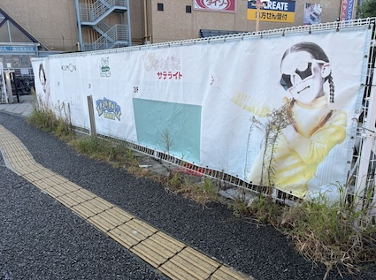
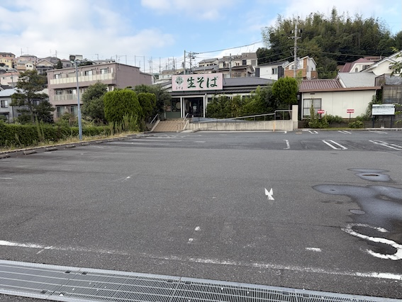

路上観察

詰め込み型看板
10月14日 家の近く 撮影者：自分
一見すると何を売っているお店かわかりませんが、商品の種類を羅列することで何を売っているお店なのかがすぐに分かるようになっています。
売っている商品を看板に多く書き並べているのが、とてもユニークだと感じました。

海外ドラマ風看板
10月14日 鶴ヶ峰駅すぐの場所 撮影者：自分
お店の名前を示すだけでなく、看板の両端に海外ドラマにでてきそうな外国人の子どもの写真が使われています。
他の看板はこのようなものではなく、なぜこの看板だけなのかだろうかととても興味深かったです。

生そばが主役な看板
10月14日 家の近く 撮影者： 自分
写真の通りお店の名前よりも大きく「生そば」と書かれているのが印象的な看板です。
お店の名前よりも大きく商品を宣伝していて、斬新だと思いました。